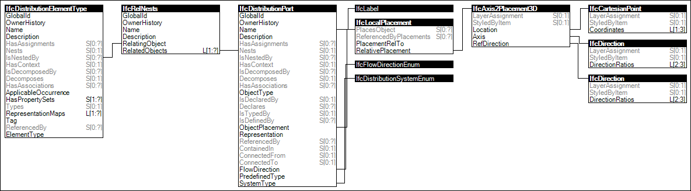

Ports may be specified on types, following the same rules as defined for corresponding occurrences.
Figure 68 illustrates an instance diagram.

Figure 68 — Type-Based Ports
Link to this page
 Link to this page
Link to this page